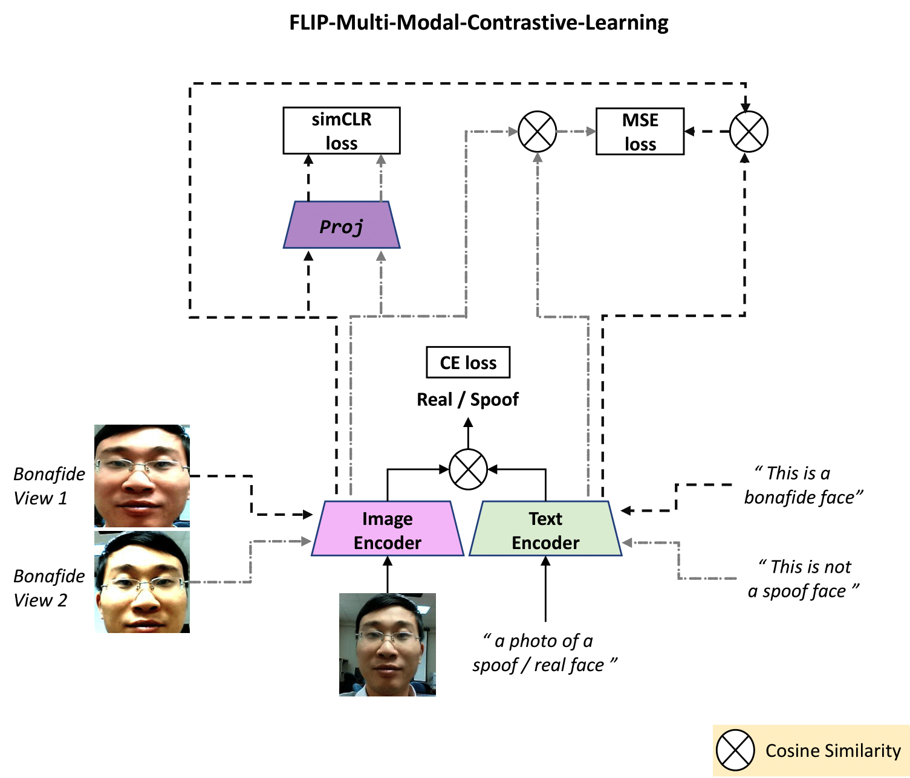
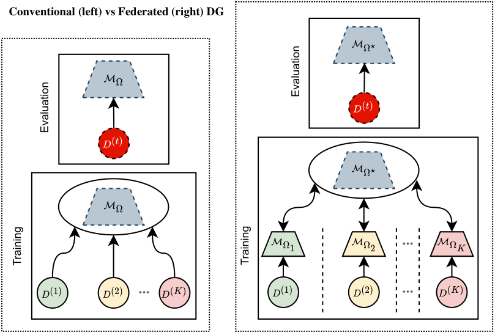

|
Koushik Srivatsan I am a researcher in computer vision, affliated with the SPriNT-AI Lab at Mohamed bin Zayed University of Artificial Intelligence (MBZUAI). I am advised by Dr.Karthik Nandakumar and Dr.Muzammal Naseer. I completed my Bachelors in Electronics and Communication Engineering and Master in Signal Processing from Indian Institute of Information Technology. I completed my master's thesis in the Computer Vision Lab at IIT Madras, advised by Dr. Anurag Mittal. Email / Google Scholar / Github / Twitter / LinkedIn |
{kind=link}
Research InterestMy research interests lie in the intersection of computer vision and ML security, with a focus on adversarial attacks, face anti-spoofing, and privacy-preserving machine learning. |
Publications* denotes joint first authors |
|  |
FLIP: Cross-domain Face Anti-spoofing with Language Guidance
Koushik Srivatsan, Muzammal Naseer, Karthik Nandakumar ICCV, 2023 |
|  |
FedSIS: Federated Split Learning with Intermediate Representation Sampling for Privacy-preserving Generalized Face Presentation Attack Detection
Naif Alkhunaizi*, Koushik Srivatsan*, Faris Almalik*, Ibrahim Almakky, Karthik Nandakumar IJCB, 2023 |

|
Evading Forensic Classifiers with Attribute-Conditioned Adversarial Faces
Fahad Shamshad, Koushik Srivatsan, Karthik Nandakumar CVPR, 2023 project page / code / video / arXiv |